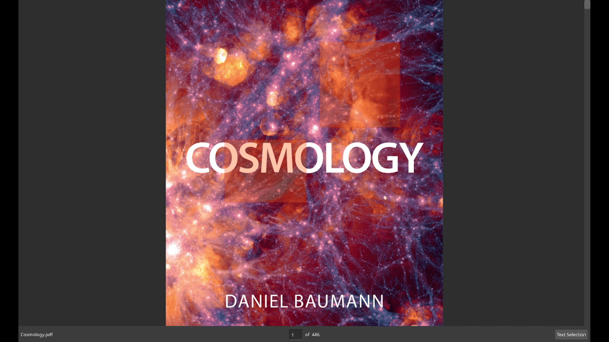

Smooth, high-performance scrolling with keyboard and mouse support.
Smooth, high-performance scrolling with keyboard and mouse support.
 Choose between top to bottom, left to right or single layouts.
Choose between top to bottom, left to right or single layouts.

Instantly search through the document with highlighted results and a scrollbar overview. Easily track jump destinations with a marker and navigate back and forth through your reading history.
Easily track jump destinations with a marker and navigate back and forth through your reading history.
 SyncTeX support for LaTeX documents to jump between source and PDF.
SyncTeX support for LaTeX documents to jump between source and PDF.
 Highlight, rectangle and popup annotations supported.
Highlight, rectangle and popup annotations supported. Highlighted text can be searched.
Highlighted text can be searched.
 Highly customizable through a simple TOML configuration file.
Highly customizable through a simple TOML configuration file.
dodo downloads and builds MuPDF 1.27.0 automatically.
If a newer MuPDF breaks the build, edit MUPDF_VERSION inside install.sh
and pin a known working version.
$ ./install.sh --help--prefix <path> install prefix (default: /usr/local)--skip-mupdf-build skip building MuPDF (only if MuPDF is already available under the prefix)--debug / --release — set CMake build type--with-llm-support — enable LLM support at configure time--cmake-arg / --cmake-args — pass extra CMake flags (useful for weird setups)sudo pacman -Syu qt6-base qt6-svg libsynctex cmake ninja glugit clone https://github.com/dheerajshenoy/dodocd dodo./install.shsudo apt update && sudo apt install qt6-base-dev qt6-svg-dev libsynctex-dev cmake ninja-build freeglut3-devgit clone https://github.com/dheerajshenoy/dodocd dodo./install.sh git clone https://github.com/dheerajshenoy/dodocd dodo./install.sh